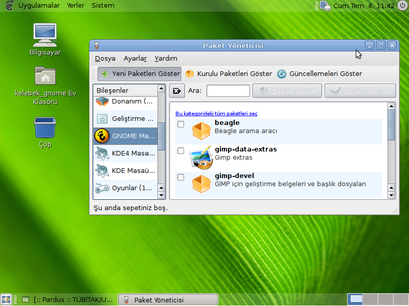
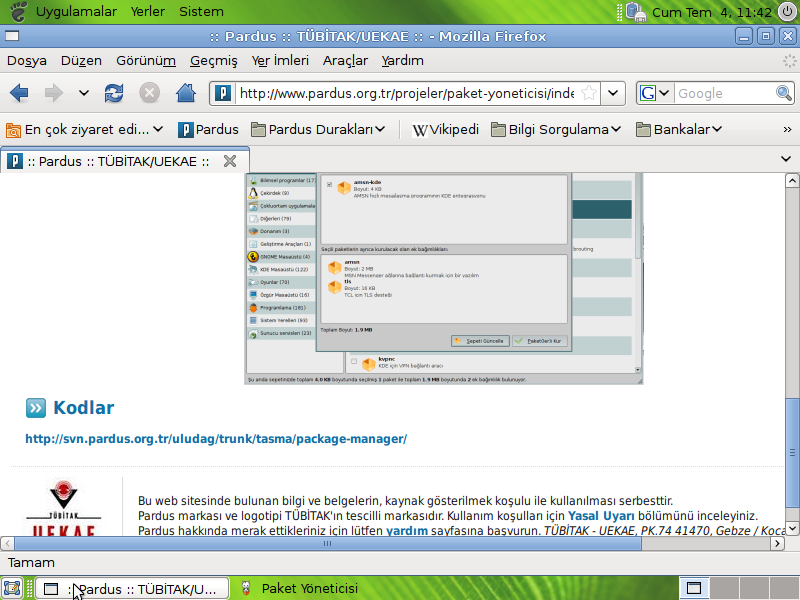
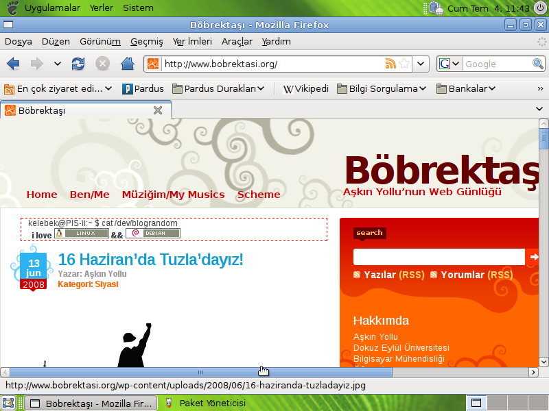
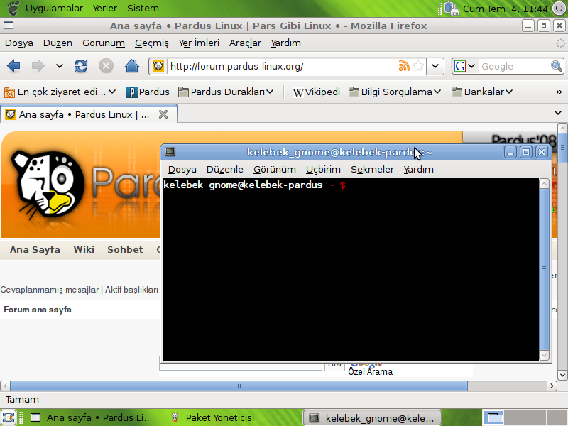
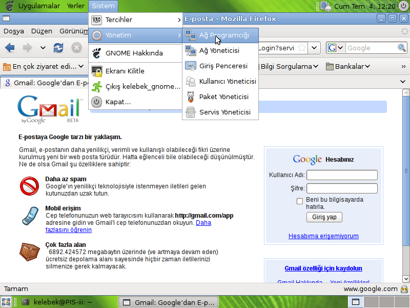

Bu yazı Parus üzerine gnome masaüstü ortamının nasıl kullanılacağını anlatmak için yazılmıştır.
GNOME (GNU Network Object Model Environment), GNU Projesi' nin bir parçası olarak Unix ve Unix benzeri işletim sistemleri için geliştirilen bir masaüstü ve geliştirme ortamıdır. Ağustos 1997' de Richard Stallman'ın Özgür Yazılım öğelerini tam olarak taşıyan bir masaüstü ortamı arayışları doğrultusunda Miguel de Icaza ve Federico Mena tarafından, o sıralar Özgür Yazılım olmayan QT kütüphanesini kullanan KDE' ye bir başka seçenek olması için geliştirilmeye başlanmış ve günümüzde de KDE ile birlikte en popüler Unix masaüstü ortamı olmuştur1.
Pardusta gnome masaüstü ortamının olmaması büyük bir eksiklikti, fakat özgür dünyada hiç bir boşluk doldurulmadan kalamıyor. Sayın Burak Çalışkan'ın Pardus GNOME Project2 adını verdiği proje ile artık pardusta gnome kullanmak mümkün. Eğer sizinde benim gibi 1 adet bira, 2 adet sigara, internet ve yaklaşık 1 saat zamanınız varsa pardusa gnome masaüstü ortamını rahatlıkla kurabilirsiniz.
sudo pisi ar contrib http://paketler.pardus.org.tr/contrib-2008/pisi-index.xml.bz2
sudo pisi ar gnomeproject http://pardus-gnome.prj.be/pisi-index.xml.bz2 -y
Yaklaşık 49MBlık 70 paket kurulacak. İşin tek uzun kısmı burası. Eğer hızlı bir internet bağlantınız varsa, çok kısa bir sürede kurulum tamamlanır.
Bu adımları tamamladıktan sonra gnome kurulmuş olacak. Gelelim şimdi sistemi gnome ile başlatmaya. Başlatmadan önce masaüstünüzün ve ayarlarınızın karışmaması için yeni bir kullanıcı oluşturmanızı tavsiye ederim. Pardus menüsü -> Tasma -> Kullanıcı hesabı -> Sistem Seçenekleri -> Ekle Oluşturduğunuz kullanıcıya yönetici yetkisi vermeyi unutmayın..
Eğer ilgisayarı yeniden başlattığınızda sadece gnome ile karşılaşmak istiyorsanız: Konsoldan
sudo service kdebase off sudo service gdm onKomutlarını verin. Bilgisayarı yeniden başlattığınızda sizi gnome karşılayacaktır.
Yok ben şimdilik gnomeu sadece denemek istiyorum, beğenirsem öntanımlı hale getiririm diyorsanız: [Ctrl] + [Alt] + [F1] ile konsola düşüyoruz... kullanıcı adımızı ve şifremzi giriyoruz...
sudo service kdebase stop sudo service gdm start
Komutlarını veriyoruz. Artık gnome karşımızda.
kullanıcı adınızı ve şifrenizi girdikten sonra sizi sade bir masaüstü karşılayacaktır. Gnome sadeliği hissediliyor heryerde. Fakat bu sadelik menülere geldiğide aşırıya kaçıyor. Menülerin pardusa göre düzenlenmesi gerekiyor. Paket yöneticisi sorunsuzca açılıyor, paket yüklemede bi sorun yok. Yeni programlar yüklendiği zaman uygulamalar altında yerini bulup yerleşiyor hemen.
Tasma kde için oluşturulmuş bir program olduğu için gnomeda açılmasına rağmen içinde menüler bulunmuyor. Bu nedenle ayarları yapmak için gnome araçlarını kullanmak gerekiyor. Sistem açıldığında otomatik olarak internete bağlanmamayabilir. Sistem -> Yönetim -> Ağ Programcığı yolunu takip ederek internete bağlanabilirsiniz.
    
1. Wikipedia http://tr.wikipedia.org/wiki/GNOME
2. http://code.google.com/p/pardus-gnome-project/
3. http://code.google.com/p/pardus-gnome-project/wiki/Kurulum